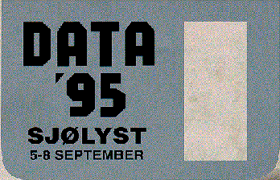

![[Oslonett Home]](/graphics/home.gif)

I forbindelse med at Norges Varemesse i år feirer sitt 75-års jubileum, har vi sammen med Oslonett AS og flere av utstillerne gått sammen med oss om å lage Verdens største Internett-kafe! Rekorden til nå har vært en kafe i Massachussets, hvor det var i underkant av 50 maskiner. I år vil vi sette ny rekord med over 50!
På Data '95 er forholdene lagt til rette på en måte som savner sidestykke på norske utstillinger: Ved hjelp av «Messeguide» blir du besøkende ledet direkte frem til de produktene du ønsker å se og få demonstrert. Enkelt og virkningsfullt!
Dette er hva Microsofts Bill Gates kaller «Information At Your Fingertips». Det er også mulig å få mer informasjon fra oss.
På Data '95 har vi laget inndelinger av messen fordelt etter hovedgrupper, som gjør messebesøket mer effektivt og gir god oversikt. Du finner utstillerne på Data '95 fordelt etter operativsystem og produktgrupper på vår internett server, dette gir deg en oversikt over hva du har i vente på Data '95. Når du kommer på messen vil du få en enda mer detaljert messeguide på produktnivå og hvor du finner de forskjellige firmaene. Her kan du få en skisse over hallene hvor messen pågår.
I forbindelse med dette ønsker Norges Varemesse å gjøre litt ekstra stas på de besøkende på Data '95. Vi bestemte oss derfor ganske tidlig at det skulle ha noe med IT og data å gjøre, og fant derfor ut at Internett var noe som vi kunne gjøre mye ut av.
Internett er i en slik posisjon i dag at alle har hørt om det, men få har ennå hatt anledningen til å prøve seg i praksis. Dermed var saken klar, vi ville lage verdens største Internett-kafé! De to grunnleggende spørsmålene som først måtte besvares var: «Hvem kunne nok om Internet til å hjelpe oss med den tekniske gjennomføringen», og «hvor stor må «Verdens største Internett-Kafe» være?» Vi fant det ene svaret i Oslo og det andre i USA...
Etter samtaler kom Oslonett AS inn som den tekniske samarbeidspartneren og vil under hele messen ta seg av det tekniske, samt gjennomføringen av av veiledning og opplæring på selve kaféen. Dermed var det bare ett spørsmål som vi måtte jobbe med. Etter en del detektiv-arbeid kom vi frem til at den største kafeen i dag finnes i Massachussets i USA, og inneholder tilsammen 40 maskiner. Norges Varemesse lager en kafé som blir på minst 50 maskiner!
Vi kontaktet utstillerne og inviterte disse til å delta i form av utlån av maskiner og annet nødvendig utstyr, en invitasjon som ble mottatt med glede og entusiasme! Maskinleverandørene stilte villig opp, og andre leverandører hadde storskjermer som vi kan bruke i introduksjonen av Internett. Dermed var ideen blitt en realitet.
For at publikum virkelig skal få prøve seg i ro og fred, vil Norges Varemesse betale telelinjen slik at alle som vil kan surfe gratis p nettet. det vil falle total
Vi ønsker alle besøkende en trivelig stund på vår Internett-Kafe i hall G.
![[Norges Varemesse]](gifs/NV-ikon.gif)
![[Internett Kafe]](gifs/internetcafe_mini.gif)
Oppdatert, 12. juni 1995, webmaster@oslonett.no